Stereochemistry: identity in three dimensions
Week 2 · Connectivity, configuration and composition
What should you be able to explain?
Classify isomer relationships; justify simple R/S and E/Z; explain meso symmetry and ee.
Bring these tools into the room
Name the bonded neighbours first. Use an explicit wedge/dash or projection convention before assigning a spatial descriptor.
Classify connectivity before spatial relationships
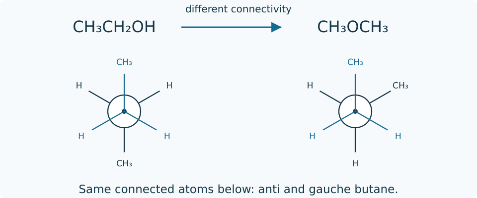
Classify connectivity before spatial relationships
Which pair differs in bonded neighbours, and which pair differs only by rotation?
Test four substituents rather than a wedge
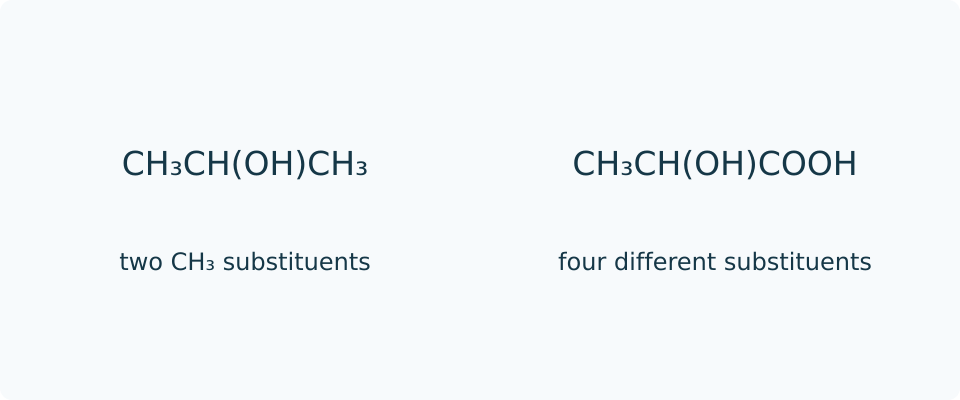
Test four substituents rather than a wedge
Propan-2-ol has two identical methyl groups; lactic acid has four different groups at its alcohol carbon.
State what a complete assignment needs
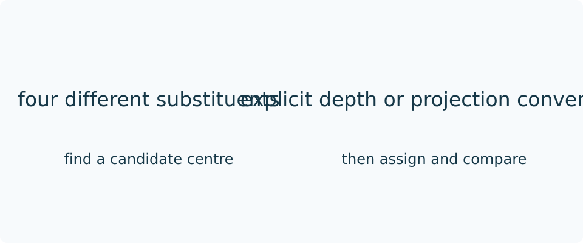
State what a complete assignment needs
Identify four substituents, their priorities and a valid 3D representation before giving an R/S label.
Predict: wedge drawn on a CH₂ carbon
Does adding a wedge make a carbon bearing two H atoms a simple stereocentre?
Resolve: identical groups still match
A drawing convention cannot make two H substituents different. Four different substituents are required for this simple centre.
Find the candidate stereocentre

Find the candidate stereocentre
At lactic acid carbon, list OH, H, CH₃ and COOH without assigning priorities yet.
Apply atomic number at the first shell
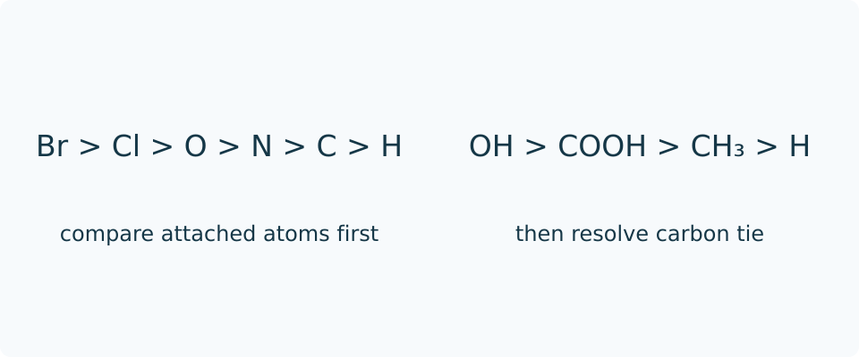
Apply atomic number at the first shell
Br outranks Cl, O outranks N, and O outranks C. Total substituent size is not the first rule.
Resolve the two-carbon tie
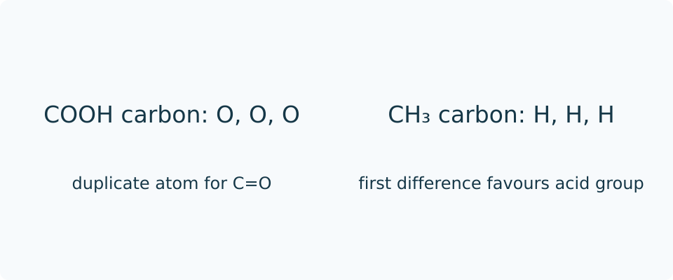
Resolve the two-carbon tie
The COOH carbon compares as O,O,O; the CH₃ carbon as H,H,H. The first difference gives COOH higher priority.
Predict: which ranks higher, OH or COOH?
Compare the directly attached atoms, not the total number of O atoms in each group.
Resolve: OH outranks COOH
OH attaches through O; COOH attaches through C. Atomic number settles this comparison immediately.
Compare the mirror-related molecules

Compare the mirror-related molecules
Their connectivity matches. Can their spatial arrangements be superimposed without changing the molecule?
Inspect the left-OH Fischer drawing
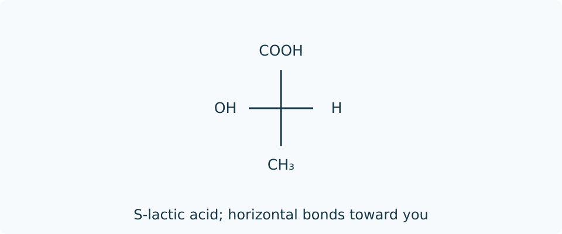
Inspect the left-OH Fischer drawing
COOH top, CH₃ bottom, OH left and H right is one defined configuration.
Enantiomers are nonsuperimposable mirrors
Enantiomers are nonsuperimposable mirrors
For this one-centre molecule, the two mirror configurations are an enantiomeric pair.
Inspect the right-OH Fischer drawing
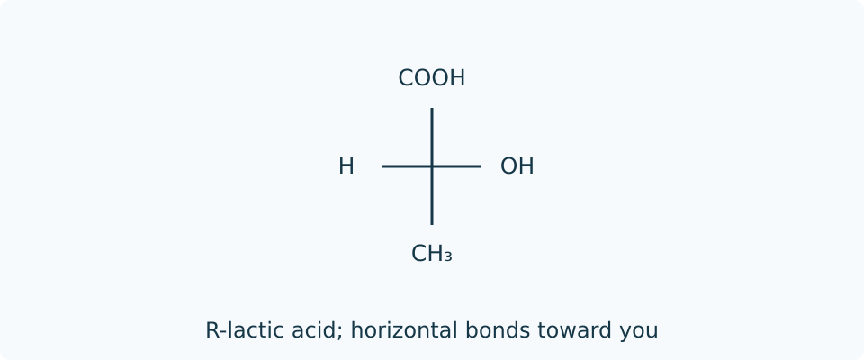
Inspect the right-OH Fischer drawing
Swapping OH and H gives the opposite configuration while retaining connectivity.
Predict: do all mirror drawings represent different molecules?
Consider a molecule with two identical substituents at the supposed centre.
Resolve: a mirror can be superimposable
Achiral molecules can coincide with their mirror images. Test the full arrangement rather than declaring every mirror drawing an enantiomer.
Use duplicate atoms as comparison bookkeeping
Use duplicate atoms as comparison bookkeeping
The C=O bond contributes duplicate O entries in the CIP comparison; it does not create extra real oxygen atoms.
Try a different attached-atom set
Try a different attached-atom set
For directly attached Br, Cl, C and H, priority follows decreasing atomic number.
Predict: does the largest-looking group always win?
Compare a directly attached O with a carbon attached to several heavier neighbours.
Resolve: start at the attachment atom
An attached O outranks an attached C in this ordinary comparison, regardless of the drawn group size farther away.
Use the Fischer depth convention

Use the Fischer depth convention
Horizontal bonds point toward you; vertical bonds point away. Do not read this as an ordinary flat cross.
Rotate the Fischer drawing by 180°
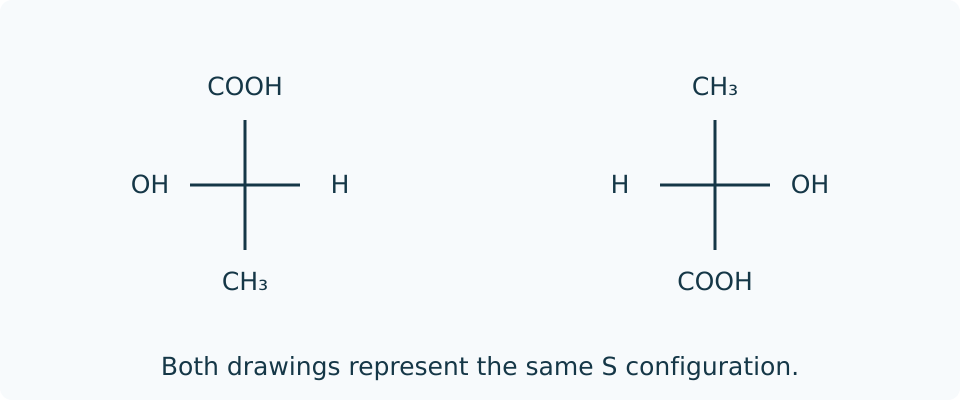
Rotate the Fischer drawing by 180°
Both the positions and group labels move. The example preserves the same S configuration.
Exchange exactly one pair
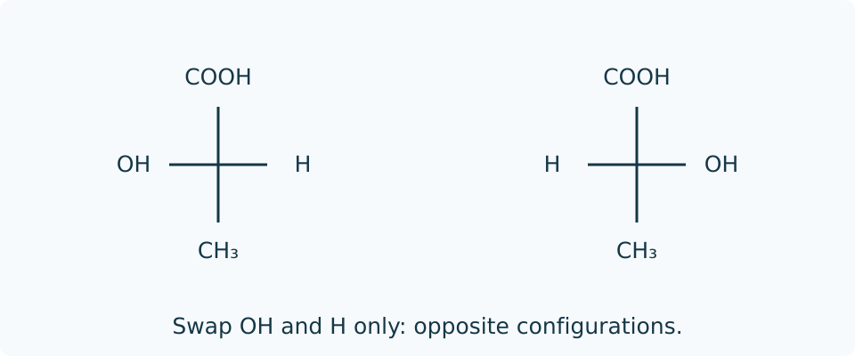
Exchange exactly one pair
Swapping H and OH alone inverts this centre. Keep the other two groups fixed while checking.
Predict: safe to rotate a Fischer by 90°?
A quarter-turn on the page would exchange which bonds the convention treats as toward and away.
Resolve: not an identity operation
A 90° Fischer rotation changes its implied configuration. Use a valid 3D transformation rather than page rotation alone.
Trace the S example in stages
Trace the S example in stages
With OH left, COOH top and CH₃ bottom, 1→2→3 appears clockwise.
Reverse when group four points forward
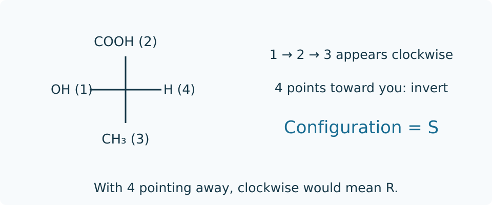
Reverse when group four points forward
In this Fischer H is horizontal, so toward the viewer. Invert the apparent clockwise result to S.
Predict: clockwise with group four away
If a valid representation puts priority four behind the page, what does clockwise 1→2→3 mean?
Resolve: that orientation gives R
Clockwise gives R only with group four away; counterclockwise then gives S. State the viewing condition.
Check both ends of the double bond

Check both ends of the double bond
E/Z requires two different substituents at each alkene carbon before priorities are compared.
Assign higher-priority groups together
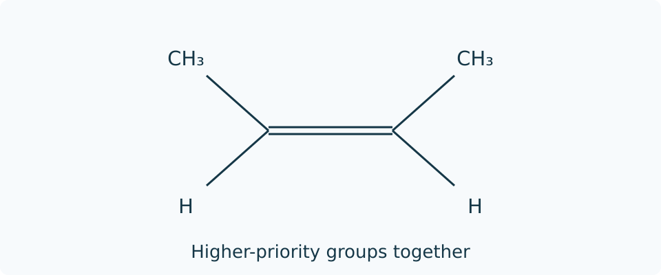
Assign higher-priority groups together
In but-2-ene, methyl outranks H at both ends. Same-side methyl groups give Z.
The relevant arrangement is configurational
The relevant arrangement is configurational
Ordinary rotation around an intact C=C is restricted; E/Z is not an anti/gauche conformer label.
Assign higher-priority groups opposite
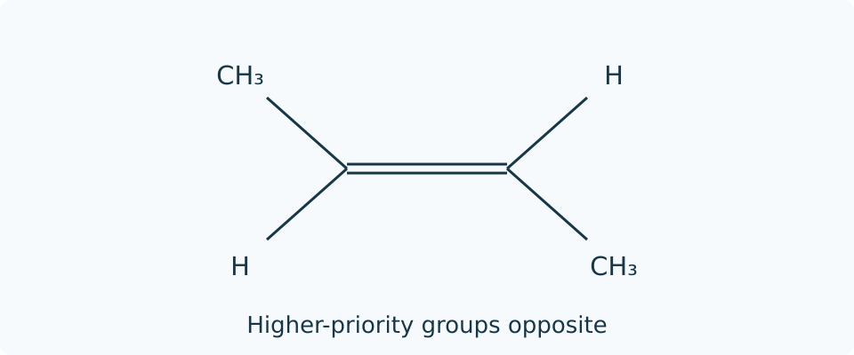
Assign higher-priority groups opposite
Opposite methyl groups give E-but-2-ene. Each end is ranked independently.
Predict: can CH₂=CHCH₃ be E or Z?
Inspect the two substituents attached to the terminal double-bond carbon.
Resolve: propene fails the two-different-groups test
The terminal carbon has H and H. No E/Z descriptor applies to that double bond.
Look beyond individual centres
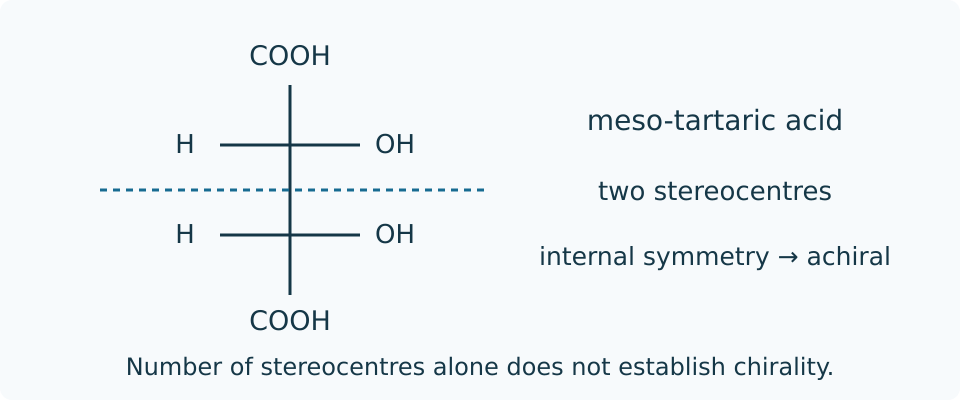
Look beyond individual centres
The meso example has stereocentres yet its overall molecule is achiral.
Mirror every centre in an unsymmetrical framework
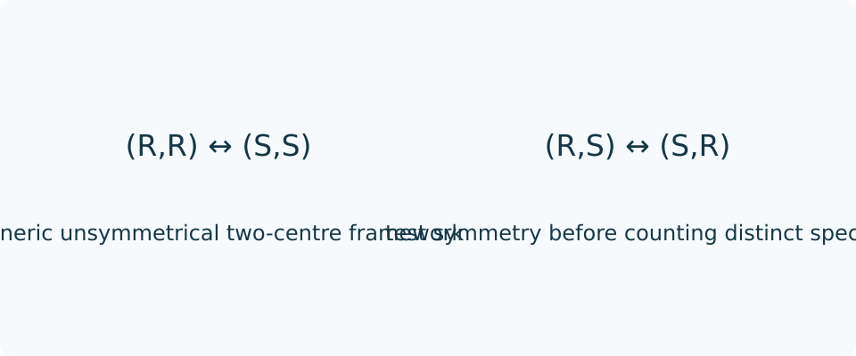
Mirror every centre in an unsymmetrical framework
A generic (R,R) mirror is (S,S). Symmetry must be checked before counting distinct species.
A meso relationship needs complete symmetry
A meso relationship needs complete symmetry
Opposite descriptors alone do not establish a meso compound. The connected groups must permit the relevant superimposition.
Inspect equivalent tartaric-acid halves
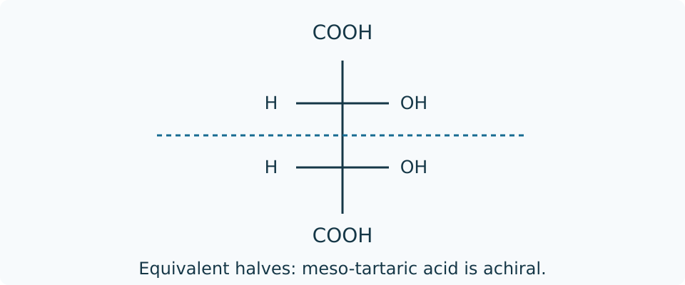
Inspect equivalent tartaric-acid halves
The displayed COOH-terminated Fischer has an internal symmetry relationship and is meso.
Predict: is every R,S molecule meso?
What if its two ends or substituents differ, so the halves cannot be exchanged by symmetry?
Resolve: descriptors alone are insufficient
An unsymmetrical R,S molecule can be chiral. Evaluate the full structure and its relationship to its mirror.
Read composition before excess
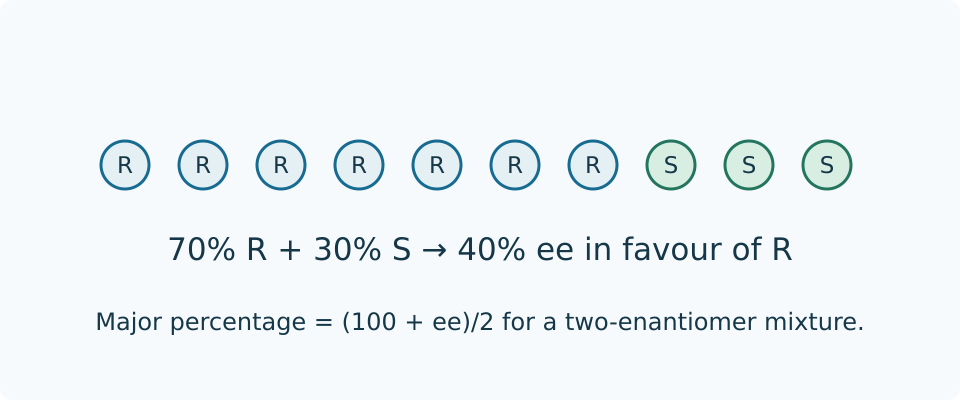
Read composition before excess
Seven R and three S species represent 70% R, not 70% ee.
Use a racemic baseline
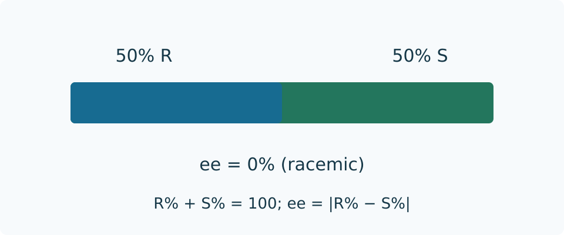
Use a racemic baseline
Equal 50/50 populations have zero ee. There is no major enantiomer.
Subtract the two percentages
Subtract the two percentages
For 70/30, the excess is 40 percentage points in favour of R; the rest can be viewed as a racemic portion.
Translate 70/30 into a bar
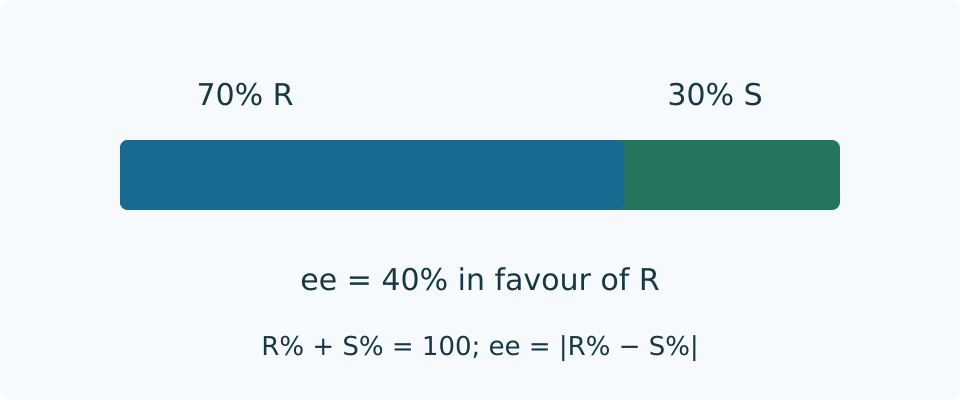
Translate 70/30 into a bar
The full bar is 100% composition; the difference between the R and S portions gives ee.
Predict: 80% ee in favour of R
Solve R+S=100 and R−S=80 before consulting the answer.
Resolve: 90% R and 10% S
Add the equations to obtain 2R=180. An ee value is not the same as the major-enantiomer percentage.
Separate configuration from a measurement
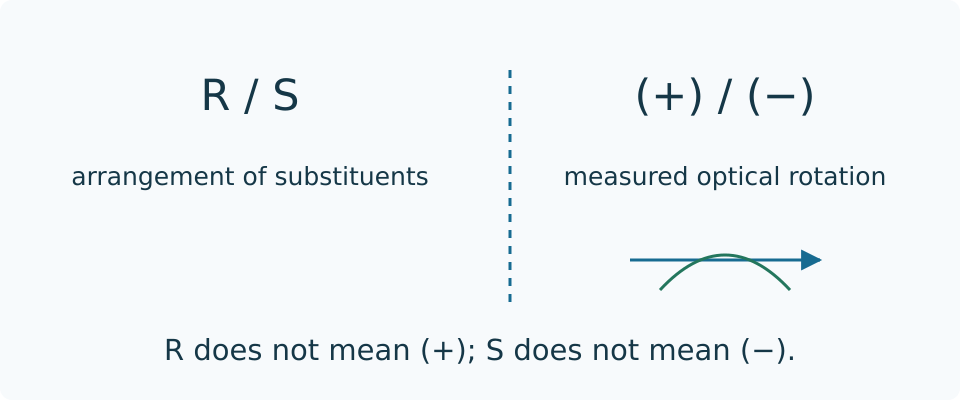
Separate configuration from a measurement
R/S describes geometry under a priority convention; (+)/(−) describes measured optical rotation.
Read the two labels independently
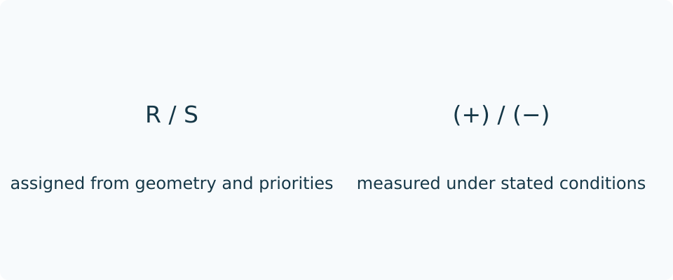
Read the two labels independently
There is no general rule that R means (+), or S means (−). The rotation also depends on specified conditions.
Chiral recognition needs evidence
Chiral recognition needs evidence
Enantiomers can interact differently with a chiral receptor. The R/S label does not predict which has the larger effect.
Keep the comparison conditions stated
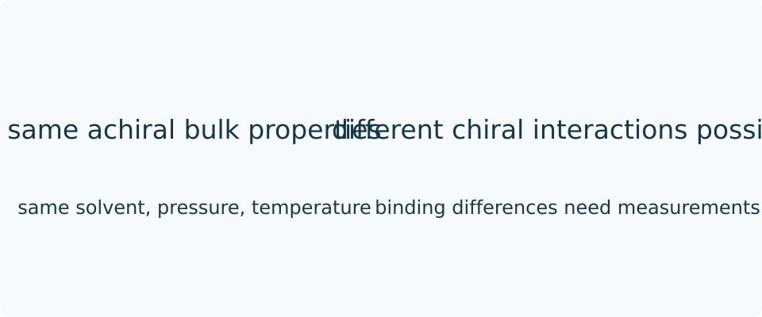
Keep the comparison conditions stated
Enantiomers share ordinary properties in an achiral environment but can differ in a chiral one; an actual effect requires data.
Predict: can ee prove chemical purity?
A sample is 95:5 R:S among its measured enantiomeric components. Could other contaminants still be present?
Resolve: composition is not total purity
Enantiomeric composition answers a restricted question. Other molecules, water or solvent are not excluded by the 95:5 ratio.
Combine the tools in one explanation
Compare lactic-acid configurations and a two-enantiomer mixture without inferring optical-rotation sign or biological effect.
Your next independent work
Use the exercises, then the self-check. Required core problems and optional transfer work are labelled separately.
One-sentence exit explanation
Write one chemical claim, the feature that supports it and one limit of the inference.
The reading guide offers supplementary explanations.